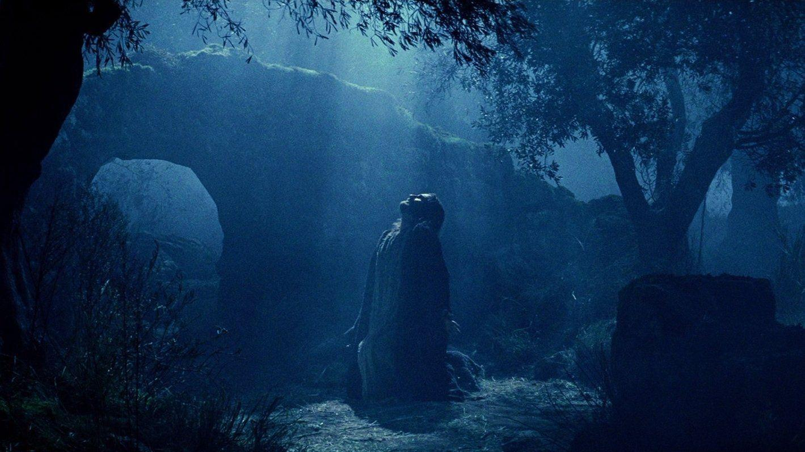
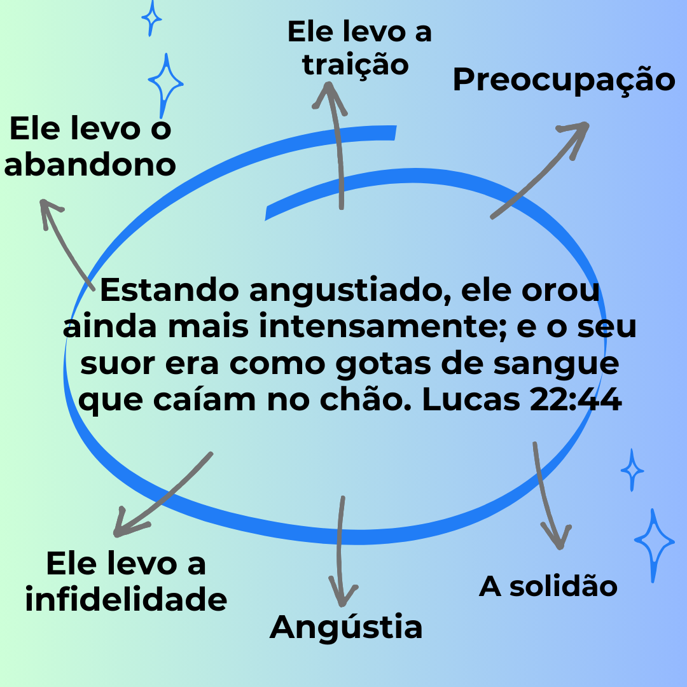

Sangue da Fidelidade


Porque Jesus derramou seu sangue através do suor, estou livre de todas as maldições do engano.
Eu lhes deixo um presente, a minha plena paz. E essa paz que eu lhes dou é um presente que o mundo não pode dar. Portanto, não se aflijam nem tenham medo. João 14:27
O Senhor Jesus Cristo falou da Paz plena, como um grande presente, que só ele pode dar e não o mundo
Esse dom da Paz plena surge quando reconhecemos e aceitamos o sacrifício de Jesus Cristo naquela cruz por nós
Através deste aplicativo aprenderemos sobre o sacrifício de Jesus, que é a única forma de ter o dom da Paz.
O sangue será um sinal para indicar as casas em que vocês estiverem; quando eu vir o sangue, passarei adiante. A praga de destruição não os atingirá quando eu ferir o Egito. Êxodo 12:13
Se o sangue de um animal (cordeiro) salvou a casa dos filhos de Deus no antigo Testamento, quanto mais o sangue do Cordeiro de Deus, Jesus Cristo, salvará e dará paz à nossa casa hoje.
O Senhor Jesus Cristo derramou sete vezes seu sangue tal qual no antiguo testamento fazia o sumo sacerdote pelo resgate dos pecados do povo. Levitico 14:7
Deus vai realizar uma Grande Colheita na Terra.
Deus conta conosco para que os peixes permaneçam na rede.
Para grandes conquistas de colheita, é necessário que tenhamos boas estratégias.
Uma pesso não curada emocionalmente tem dificuldades de manter os peixes na rede.
Para que os peixes permaneçam, nós precisamos entrar em guerra espiritual. Ser valente em Deus. Fé não é só falar, é viver! A SUA REDE NÃO VAI ROMPER!
Sangue da Fidelidade
Porque Jesus derramou seu sangue através do suor, estou livre de todas as maldições do engano.
Sangue da Redeção


Pelo sangue derramado nas chagas do corpo ferido de Jesus tenho direito à cura e a ficar livre da dor
Sangue da Conquista


Por quanto você derramou seu sangue Senhor Jesus Cristo pela coroa de espinhos bendita é a terra por sua causa
Sangue da Identidade
Por quanto o sangue do Senhor Jesus Cristo foi derramado de seu rosto, posso restaurar minha imagem
Sangue da Productividad
Por causa do sangue derramado por Jesus através de suas mãos, toda improdutividade em minha vida é cancelada
Sangue do Proposito


Por causa do sangue derramado por Jesus através de seus pés, posso recuperar minha direção
Sangue da Consagração


Por causa do sangue derramado por Jesus em seu lado, toda dor em meu coração é levada por ele